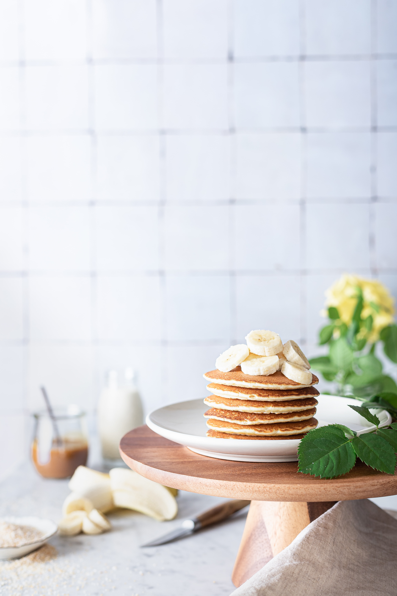

<!DOCTYPE html>
<html>
    <meta charset="UTF-8">
    <title>Good old fashined Pancakes</title>
    <link rel="stylesheet" href="../styles.css"> 
</html>

<body id="recipe-container">
    <h1> Good old fashined Pancakes</h1>
    
    <p>This is a great recipe that I found in my Grandma's recipe book (I'm just lying,
        I found it on internet). Judging from the weathered look of this recipe card, this was a family favorite. </p>
    
    <p><strong>Total:</strong> 40 mins <strong>Yield:</strong> Makes 8 servings </p> 

    <h2> Ingredients </h2>
    <ul>
        <li id="checklist"><input type="checkbox"> 1 ½ cups all-purpose flour</li>
        <li id="checklist"><input type="checkbox"> 3 ½ teaspoons baking powder</li>
        <li id="checklist"><input type="checkbox"> ¼ teaspoon salt, or more to taste </li>
        <li id="checklist"><input type="checkbox"> 1 tablespoon white sugar</li>
        <li id="checklist"><input type="checkbox"> 1 ¼ cups milk </li>
        <li id="checklist"><input type="checkbox"> 1 egg </li>
        <li id="checklist"><input type="checkbox"> 3 tablespoons butter, melted </li>
    </ul>

    <ol>
        <li>In a large bowl, sift together the flour, baking powder, salt and sugar. Make a well in the 
            center and pour in the milk, egg and melted butter; mix until smooth;</li>
        <li>Heat a lightly oiled griddle or frying pan over medium-high heat. Pour or scoop the batter 
            onto the griddle, using approximately 1/4 cup for each pancake. Brown on both sides and serve hot.</li>
    </ol>
</body>